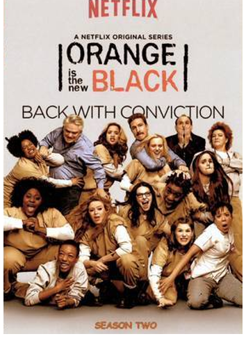
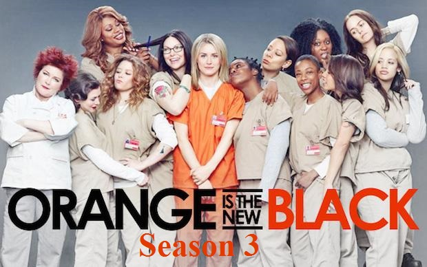

A Primeira Temporada da série mostra a chegada e adaptação de Piper Chapman (Taylor Schilling) na prisão de Litchfield. Também seu reecontro com a ex-namorada Alex Vause (Laura Prepon) dentro da própria prisão, e sempre intercalando com flashbacks do seu passado para que possamos saber como elas se conheceram, e também sobre seu relacionamento com Larry Bloom (Jason Biggs), seu atual noivo. A temporada vai apresentar como funciona a divisão das detentas na prisão em grupos, o fanatismo religioso de Pennsatucky (Taryn Manning), o relacionamento detenta-guarda de Daya (Dascha Polanco) com Bennett (Matt McGorry), Crazy Eyes (Uzo Aduba) e sua obsessão por Piper, e Red (Kate Mulgrew) como chef de cozinha, e do contrabando dentro da prisão.
Segunda Temporada

A Segunda Temporada começa com Piper Chapman sendo transferida pra uma prisão de segurança máxima, e então retornando para Litchfield. Sua ex-namorada Alex Vause está solta e a prisão agora conta com novas detentas, e uma delas é Vee (Lorraine Toussaint), a vilã da temporada. Depois da descoberta do contrabando de Red, a cozinha é assumida pelas latinas, no comando da nova chef Gloria Mendoza (Selenia Leyva). E o contrabando agora é liderado pela própria Vee, que ganha a confiança do grupo das negras da prisão, principalmente de Crazy Eyes. Muitos flashbacks contando histórias de algumas prisioneiras tornam a temporada mais interessante. Já o relacionamento de Piper com Larry vai encarar sua maior crise nesta temporada. E agora, com a alegação de estupro do guarda Pornstache (Pablo Schreiber), a administração da prisão vai entrar em crise, e Joe Caputo (Nick Sandow) vai tentar desmascarar os esquemas de Natalie Figueroa (Alysia Reiner). Ao final da segunda temporada, resta a Piper o cumprimento de 8 meses de sua sentença.
Terceira Temporada

Com Alex Vause (Laura Prepon) de volta a Litchfield e outras novas detentas na área, a terceira temporada mostra o relacionamento de Alex e Piper tendo algumas reviravoltas, principalmente com a presença da detenta Stella (Ruby Rose). Piper agora mais amadurecida e adaptada à vida dentro da prisão, começa um esquema de contrabando de calcinhas. Enquanto isso, a prisão de Litchfield passa por uma crise administrativa que não afeta só a própria prisão, mas também seus funcionários. Muitos flashbacks contando novas histórias de prisioneiras estão presentes nessa temporada. Várias temáticas polêmicas são levantadas, como aborto e estupro. A detenta Crazy Eyes (Uzo Aduba) se torna a sensação após escrever contos eróticos, assim como Norma (Annie Golden) também tem um grande destaque por "realizar milagres".